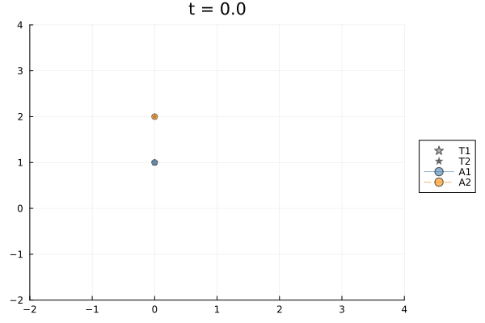
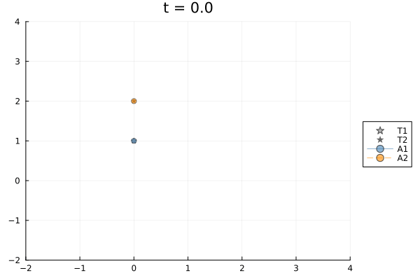
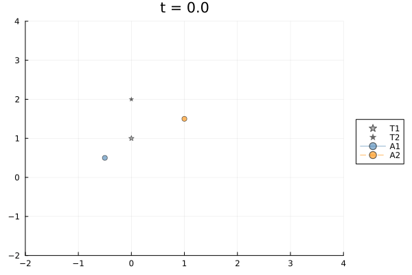
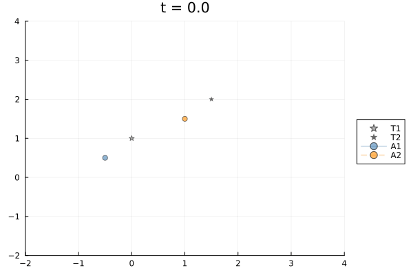
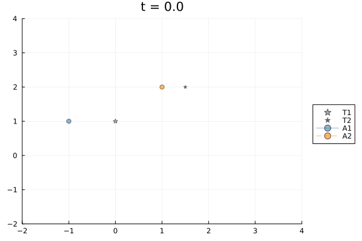
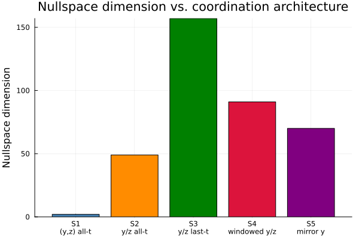

Multi-Agent Target Tracking via a Time-Expanded Cellular Sheaf
This example uses a time-expanded sheaf to study how coordination constraints determine the space of feasible agent trajectories. Five scenarios are compared; the nullspace dimension of the restricted sheaf Laplacian measures how many free degrees of freedom remain after constraints are imposed.
Vehicle model. Each agent or target is a planar quadrotor. The state is
\[x = [y,\, z,\, \varphi,\, \dot y,\, \dot z,\, \dot\varphi]^\top \in \mathbb{R}^6\]
where $y$ is the lateral position, $z$ is the altitude, and $\varphi$ is the roll angle. The control input is $u = [T_1, T_2]^\top \in \mathbb{R}^2$.
Sheaf structure. Each vertex $(\text{entity}, t)$ carries a stalk $\mathbb{R}^{n_x + n_u} = \mathbb{R}^8$. Three edge families encode:
- Dynamics: $x_{t+1} = A_d x_t + B_d u_t$.
- Consensus: inter-agent agreement on a chosen coordinate subspace.
- Tracking: agent–target alignment in a chosen coordinate subspace.
By varying which coordinates are constrained and at which timesteps, we obtain four qualitatively different solution spaces whose nullspace dimensions tell the story of the engineering constraints.
The problem-construction and solve utilities used below come from CellularSheaves.ControlSheaves.MultiAgentTracking.
- Problem specification is written with
@tracking_problemfromCellularSheaves.ControlSheaves.TrackingDSL. - The solver pipeline is
lower_tracking_program -> run_scenario. - Animations are produced by
animate_tracking_xy, implemented by the plotting extension whenPlotsis loaded.
using CellularSheaves
using CellularSheaves.ControlSheaves.MultiAgentTracking
using CellularSheaves.ControlSheaves.TrackingDSL
using CellularSheaves.TrajectorySheaves: continuous_to_discrete_zoh
using LinearAlgebra
using PlotsPlanar Quadrotor Dynamics
State: $x = [y, z, \varphi, \dot y, \dot z, \dot\varphi]$. The linearisation is taken around the hover trim condition.
g = 9.81
m_veh = 0.5
I_quad = 0.01
ell = 0.25
Ac = [0.0 0.0 0.0 1.0 0.0 0.0;
0.0 0.0 0.0 0.0 1.0 0.0;
0.0 0.0 0.0 0.0 0.0 1.0;
0.0 0.0 -g 0.0 0.0 0.0;
0.0 0.0 0.0 0.0 0.0 0.0;
0.0 0.0 0.0 0.0 0.0 0.0]
Bc = [0.0 0.0;
0.0 0.0;
0.0 0.0;
0.0 0.0;
1.0 / m_veh 1.0 / m_veh;
ell / (2I_quad) -ell / (2I_quad)]
h = 0.05
Ad, Bd = continuous_to_discrete_zoh(Ac, Bc, h)
nx = size(Ad, 1)
nu = size(Bd, 2)2State-index constants for the planar quadrotor.
IDX_Y = 1 # lateral position y
IDX_Z = 2 # altitude z
IDX_PHI = 3 # roll angle φ
IDX_YDT = 4 # ẏ
IDX_ZDT = 5 # ż
IDX_PHIDT = 6 # roll angle ϕ̇6Common Setup
All five scenarios use two agents and two targets over a 40-step horizon (2 s). The projection matrices are defined once and reused:
- $R_{yz}$: projects the $(n_x + n_u)$-stalk onto $(y, z)$ (Scenario 1).
- $R_y$: projects onto $y$ only (consensus in Scenarios 2–4).
- $R_z$: projects onto $z$ only (tracking in Scenarios 2–4).
- $negR_y$: negative $y$ projection used for mirrored consensus (Scenario 5).
Each scenario is specified as a @tracking_problem DSL program. The DSL declaratively names agents, targets, a time horizon, and the consensus/tracking coordination edges. Calling lower_tracking_program on the resolved program produces the TrackingProblem struct used by the simulation utilities. The boundary data (initial conditions, target trajectories) is still supplied externally as a plain Dict — it varies per scenario but never changes the sheaf topology.
k = 40
times = h .* collect(0:k)
R_yz = state_projection_matrix([IDX_Y, IDX_Z], nx, nu)
R_y = state_projection_matrix([IDX_Y], nx, nu)
R_z = state_projection_matrix([IDX_Z], nx, nu)
negR_y = -R_y1×8 Matrix{Float64}:
-1.0 -0.0 -0.0 -0.0 -0.0 -0.0 -0.0 -0.0Bobbing targets used in Scenarios 2–5. Both complete two full vertical cycles over the 2-second horizon.
omega_2periods = 2π * 2 / (k * h)
bt1 = BobbingTarget(0.0, 1.0, 0.3, omega_2periods)
bt2 = BobbingTarget(0.0, 2.0, 0.3, omega_2periods)
traj_bt1 = trajectory(bt1, 0:k, h, nx, nu, IDX_Y, IDX_Z, IDX_ZDT)
traj_bt2 = trajectory(bt2, 0:k, h, nx, nu, IDX_Y, IDX_Z, IDX_ZDT)41-element Vector{Vector{Float64}}:
[0.0, 2.0, 0.0, 0.0, 1.8849555921538759, 0.0, 0.0, 0.0]
[0.0, 2.0927050983124844, 0.0, 0.0, 1.7926992988449335, 0.0, 0.0, 0.0]
[0.0, 2.176335575687742, 0.0, 0.0, 1.524961107694578, 0.0, 0.0, 0.0]
[0.0, 2.2427050983124843, 0.0, 0.0, 1.107949098294274, 0.0, 0.0, 0.0]
[0.0, 2.285316954888546, 0.0, 0.0, 0.58248331161764, 0.0, 0.0, 0.0]
[0.0, 2.3, 0.0, 0.0, 1.1542024162330739e-16, 0.0, 0.0, 0.0]
[0.0, 2.285316954888546, 0.0, 0.0, -0.5824833116176402, 0.0, 0.0, 0.0]
[0.0, 2.2427050983124843, 0.0, 0.0, -1.107949098294274, 0.0, 0.0, 0.0]
[0.0, 2.176335575687742, 0.0, 0.0, -1.5249611076945777, 0.0, 0.0, 0.0]
[0.0, 2.0927050983124844, 0.0, 0.0, -1.7926992988449335, 0.0, 0.0, 0.0]
[0.0, 2.0, 0.0, 0.0, -1.8849555921538759, 0.0, 0.0, 0.0]
[0.0, 1.9072949016875156, 0.0, 0.0, -1.7926992988449335, 0.0, 0.0, 0.0]
[0.0, 1.823664424312258, 0.0, 0.0, -1.5249611076945775, 0.0, 0.0, 0.0]
[0.0, 1.757294901687516, 0.0, 0.0, -1.1079490982942741, 0.0, 0.0, 0.0]
[0.0, 1.714683045111454, 0.0, 0.0, -0.5824833116176402, 0.0, 0.0, 0.0]
[0.0, 1.7, 0.0, 0.0, -3.4626072486992216e-16, 0.0, 0.0, 0.0]
[0.0, 1.7146830451114539, 0.0, 0.0, 0.5824833116176396, 0.0, 0.0, 0.0]
[0.0, 1.757294901687516, 0.0, 0.0, 1.107949098294275, 0.0, 0.0, 0.0]
[0.0, 1.823664424312258, 0.0, 0.0, 1.5249611076945777, 0.0, 0.0, 0.0]
[0.0, 1.9072949016875158, 0.0, 0.0, 1.7926992988449335, 0.0, 0.0, 0.0]
[0.0, 2.0, 0.0, 0.0, 1.8849555921538759, 0.0, 0.0, 0.0]
[0.0, 2.092705098312484, 0.0, 0.0, 1.7926992988449337, 0.0, 0.0, 0.0]
[0.0, 2.1763355756877423, 0.0, 0.0, 1.5249611076945773, 0.0, 0.0, 0.0]
[0.0, 2.2427050983124843, 0.0, 0.0, 1.1079490982942732, 0.0, 0.0, 0.0]
[0.0, 2.285316954888546, 0.0, 0.0, 0.5824833116176389, 0.0, 0.0, 0.0]
[0.0, 2.3, 0.0, 0.0, 5.77101208116537e-16, 0.0, 0.0, 0.0]
[0.0, 2.285316954888546, 0.0, 0.0, -0.5824833116176393, 0.0, 0.0, 0.0]
[0.0, 2.2427050983124843, 0.0, 0.0, -1.1079490982942737, 0.0, 0.0, 0.0]
[0.0, 2.176335575687742, 0.0, 0.0, -1.5249611076945775, 0.0, 0.0, 0.0]
[0.0, 2.092705098312484, 0.0, 0.0, -1.7926992988449342, 0.0, 0.0, 0.0]
[0.0, 2.0, 0.0, 0.0, -1.8849555921538759, 0.0, 0.0, 0.0]
[0.0, 1.9072949016875158, 0.0, 0.0, -1.7926992988449337, 0.0, 0.0, 0.0]
[0.0, 1.8236644243122582, 0.0, 0.0, -1.5249611076945784, 0.0, 0.0, 0.0]
[0.0, 1.757294901687516, 0.0, 0.0, -1.1079490982942746, 0.0, 0.0, 0.0]
[0.0, 1.7146830451114539, 0.0, 0.0, -0.5824833116176374, 0.0, 0.0, 0.0]
[0.0, 1.7, 0.0, 0.0, -8.079416913631517e-16, 0.0, 0.0, 0.0]
[0.0, 1.7146830451114539, 0.0, 0.0, 0.5824833116176391, 0.0, 0.0, 0.0]
[0.0, 1.7572949016875157, 0.0, 0.0, 1.1079490982942735, 0.0, 0.0, 0.0]
[0.0, 1.823664424312258, 0.0, 0.0, 1.5249611076945773, 0.0, 0.0, 0.0]
[0.0, 1.9072949016875163, 0.0, 0.0, 1.7926992988449342, 0.0, 0.0, 0.0]
[0.0, 1.9999999999999998, 0.0, 0.0, 1.8849555921538759, 0.0, 0.0, 0.0]Build boundary data with pinned agent initials (and optional terminal states) plus pinned target trajectories.
function build_boundary(
prob,
nu::Int;
agent_initials::Vector{Vector{Float64}},
target_trajs::Vector{Vector{Vector{Float64}}},
agent_terminals::Union{Nothing,Vector{Vector{Float64}}}=nothing,
)
bnd = Dict{Int,Vector{Float64}}()
for (i, x0) in enumerate(agent_initials)
bnd[agent_vertex(prob, i, 0)] = vcat(x0, zeros(nu))
end
if !isnothing(agent_terminals)
for (i, xk) in enumerate(agent_terminals)
bnd[agent_vertex(prob, i, k)] = vcat(xk, zeros(nu))
end
end
for (j, traj) in enumerate(target_trajs)
for (t, x) in enumerate(traj)
bnd[target_vertex(prob, j, t - 1)] = x
end
end
return bnd
endbuild_boundary (generic function with 1 method)Scenario 1: Full (y,z) Coordination at Every Timestep
Both consensus and tracking edges use the $(y, z)$ projection, active at every timestep.
The two agents travel to distinct goals while each tracking its own target in full $(y, z)$. But the consensus edge demands that agents agree in $(y, z)$ at every step. Since the two targets travel different $(y, z)$ trajectories, the constraints "A1 tracks T1", "A2 tracks T2", and "A1 agrees with A2 in $(y,z)$" are mutually incompatible unless the targets coincide. The harmonic extension therefore computes a least-squares compromise and typically reports a relatively large residual.
x0_a1_s1 = [0.0, 1.0, 0.0, 0.0, 0.0, 0.0]
xk_a1_s1 = [2.0, 1.5, 0.0, 0.0, 0.0, 0.0]
x0_a2_s1 = [0.0, 2.0, 0.0, 0.0, 0.0, 0.0]
xk_a2_s1 = [2.0, 2.5, 0.0, 0.0, 0.0, 0.0]
traj_t1_s1 = generate_reference_trajectory(x0_a1_s1, xk_a1_s1, k, Ad, Bd, nx, nu)
traj_t2_s1 = generate_reference_trajectory(x0_a2_s1, xk_a2_s1, k, Ad, Bd, nx, nu)41-element Vector{Vector{Float64}}:
[0.0, 2.0, 0.0, 0.0, 0.0, 0.0, 0.0, 0.0]
[-6.395441560233875e-11, 1.999999999998919, 1.842873076363105e-12, -5.558775661995696e-12, -2.1316282072803006e-14, 2.4868995751603507e-14, -192.01431729271462, -182.57382860160047]
[0.0003014686024541361, 1.0635296352620491, -0.1475076357969141, 0.024117498444256633, -37.4588145894315, -5.900305431946327, 206.19765846938887, 195.84551191323686]
[0.004191449524761624, 0.1956968317459575, -0.2807706174548289, 0.14237598975755195, 2.745502448831149, 0.5697861656486812, 0.0, -0.6068901773346677]
[0.014617368413246323, 0.3314547287430971, -0.24279865015081964, 0.27155656001700335, 2.6848134310978162, 0.9490925264828607, 4.703252740928275, 0.0]
[0.030828352250184182, 0.4774535321492274, -0.1218556997461882, 0.3669957098306263, 3.155138705190831, 3.8886254895629455, 0.0, 5.823405178802746]
[0.05006361761669083, 0.6497689803546947, -0.01841513117901819, 0.3939586409185184, 3.737479223071347, 0.24899725281086682, 2.4146405462275506, 0.0]
[0.06985936825464771, 0.8426795428734619, 0.03176348999456626, 0.39376928192684174, 3.9789432776942015, 1.7581475942031817, 0.0, 0.0]
[0.0887990111388447, 1.041626706758132, 0.11967086970504075, 0.3566300052109233, 3.9789432776942117, 1.758147594203167, 0.0, 4.223147555648007]
[0.10493858622193444, 1.2511317395319224, 0.1415915688586964, 0.2871609810181629, 4.401258033259025, -0.8813196280768718, 0.0, 0.0]
[0.11774048835828642, 1.4711946411948669, 0.09752558745499817, 0.2285174984323836, 4.401258033259026, -0.8813196280768799, 0.0, 0.0]
[0.12815057546231223, 1.6912575428578123, 0.053459606051362796, 0.19148837972513902, 4.401258033259028, -0.8813196280768967, -14.36440698528786, 0.0]
[0.13770827286506576, 1.8754094270575385, -0.21505023449732286, 0.2127701958666261, 2.964817334730243, -9.859073993881838, 0.0, 0.0]
[0.15299878440627468, 2.023650293794021, -0.7080039341913296, 0.4391492307375935, 2.9648173347302573, -9.859073993881841, 0.0, 0.0]
[0.18565309243352968, 2.1718911605305045, -1.2009576338853083, 0.9073220553084786, 2.964817334730273, -9.859073993881848, 0.0, -24.3143558059047]
[0.24698444167122763, 2.259346137752227, -1.313999524111995, 1.5551730887313704, 0.5333817541398199, 5.337398384808572, 0.0, 0.0]
[0.33976518447730364, 2.286015225459214, -1.0471296048715608, 2.134240007614597, 0.533381754139822, 5.337398384808574, 0.0, 0.0]
[0.4582267808428551, 2.312684313166201, -0.7802596856311227, 2.582407231110391, 0.5333817541398242, 5.337398384808574, 0.0, 0.0]
[0.5958242459985105, 2.339353400873189, -0.5133897663906805, 2.8996747592187515, 0.5333817541398266, 5.337398384808571, 0.0, 0.0]
[0.7460125951748976, 2.3660224885801777, -0.246519847150233, 3.0860425919396763, 0.5333817541398292, 5.337398384808568, 0.0, 0.0]
[0.9022468436026447, 2.3926915762871683, 0.02035007209021955, 3.1415107292731617, 0.5333817541398318, 5.337398384808565, 0.0, 0.0]
[1.05798200651238, 2.41936066399416, 0.28721999133067755, 3.066079171219206, 0.5333817541398344, 5.33739838480856, -6.93682747854572, 0.0]
[1.206894616965345, 2.4286876830047883, 0.4457019812188646, 2.877469344226904, -0.16030099371473508, 1.0018812107174813, 0.0, 0.0]
[1.3450979041595374, 2.4206726333190525, 0.49579604175476566, 2.646566954092637, -0.1603009937147324, 1.0018812107174786, 0.0, 0.0]
[1.4711417934296955, 2.412657583633316, 0.5458901022906715, 2.39109342726551, -0.16030099371472972, 1.0018812107174746, 0.0, 0.0]
[1.583797727941176, 2.4046425339475803, 0.5959841628265818, 2.111048763745523, -0.16030099371472706, 1.0018812107174686, 0.0, 0.0]
[1.6818371508593355, 2.3966274842618454, 0.6460782233624969, 1.8064329635326724, -0.16030099371472445, 1.001881210717461, 0.0, 3.7506107487655713]
[1.764151275829496, 2.397988961448025, 0.6375689909489549, 1.486827665024193, 0.2147600811618352, -1.3422505072610307, 0.0, 0.0]
[1.8309487917766132, 2.4087269655061254, 0.5704564655859038, 1.190559421809018, 0.21476008116183015, -1.3422505072610307, 0.0, 0.0]
[1.883755862905236, 2.419464969564226, 0.5033439402228526, 0.9272098722844199, 0.2147600811618246, -1.3422505072610302, 0.0, 0.0]
[1.9242184238998927, 2.4302029736223263, 0.43623141485980144, 0.6967790164503986, 0.2147600811618186, -1.3422505072610298, 0.0, 0.0]
[1.9539824094451128, 2.440940977680426, 0.36911888949675037, 0.4992668543069542, 0.21476008116181222, -1.3422505072610298, 0.0, 0.0]
[1.9746937542254241, 2.4516789817385254, 0.30200636413369936, 0.3346733858540866, 0.21476008116180534, -1.3422505072610293, 0.0, 0.0]
[1.987998392925356, 2.4624169857966245, 0.23489383877064862, 0.2029986110917957, 0.21476008116179807, -1.3422505072610293, 0.0, 0.0]
[1.9955422602294373, 2.4731549898547236, 0.16778131340759814, 0.10424253002008144, 0.2147600811617903, -1.342250507261029, 0.0, 0.0]
[1.9989712908221973, 2.483892993912821, 0.10066878804454803, 0.03840514263894364, 0.2147600811617822, -1.342250507261029, 0.0, 0.0]
[1.9999314193881652, 2.4946309979709187, 0.03355626268149836, 0.005486448948382155, 0.21476008116177359, -1.3422505072610285, 0.0, -2.1476008116176453]
[2.000000000000015, 2.4999999999999725, -2.5028590311393373e-14, -3.2731298106712423e-14, 0.0, 0.0, 0.0, 0.0]
[2.0000000000000093, 2.499999999999982, -1.7839896226945484e-14, -1.832561880021899e-14, 6.661338147750939e-16, 6.046053414865415e-16, 0.0, 0.0]
[2.0000000000000044, 2.499999999999991, -9.523631883112671e-15, -7.233221647252286e-15, 8.81239525796218e-16, 8.227874761720932e-16, -3.808103053749275e-15, -2.853235094001666e-15]
[2.0, 2.5, 0.0, 0.0, 0.0, 0.0, 0.0, 0.0]The DSL program below declares agents, targets, the time horizon, and the $(y,z)$ consensus and tracking edges active at every timestep. lower_tracking_program builds the TrackingProblem with target dynamics included and a higher tracking weight to steer the least-squares solution toward the tracking objective.
prog1 = @tracking_problem begin
agent(a1; dynamics=(Ad, Bd), period=h)
agent(a2; dynamics=(Ad, Bd), period=h)
target(t1)
target(t2)
horizon(K)
times(Tall = 0:K)
consensus(c1; agents=(a1,a2), maps=(R_yz,R_yz), at=Tall)
track(tr1; agent=a1, target=t1, maps=(R_yz,R_yz), at=Tall)
track(tr2; agent=a2, target=t2, maps=(R_yz,R_yz), at=Tall)
end
ctx1 = Dict{Symbol,Any}(:K => k, :Ad => Ad, :Bd => Bd, :R_yz => R_yz, :h => h)
prob1 = lower_tracking_program(prog1, ctx1;
include_target_dynamics=true, tracking_weight=5.0,
).problem
bnd1 = build_boundary(prob1, nu;
agent_initials=[x0_a1_s1, x0_a2_s1],
agent_terminals=[xk_a1_s1, xk_a2_s1],
target_trajs=[traj_t1_s1, traj_t2_s1],
)
result1 = run_scenario("Scenario 1", prob1, bnd1, times;
target_trajs = [traj_t1_s1, traj_t2_s1], y_col = IDX_Y, z_col = IDX_Z)
animate_tracking_xy(result1; filename="quadrotor_scenario1.gif", x_col=IDX_Y, y_col=IDX_Z)Plots.Animation("/tmp/jl_fUPtHz", ["000001.png", "000002.png", "000003.png", "000004.png", "000005.png", "000006.png", "000007.png", "000008.png", "000009.png", "000010.png", "000011.png", "000012.png", "000013.png", "000014.png", "000015.png", "000016.png", "000017.png", "000018.png", "000019.png", "000020.png", "000021.png", "000022.png", "000023.png", "000024.png", "000025.png", "000026.png", "000027.png", "000028.png", "000029.png", "000030.png", "000031.png", "000032.png", "000033.png", "000034.png", "000035.png", "000036.png", "000037.png", "000038.png", "000039.png", "000040.png", "000041.png"])
Scenario 2: y-Consensus and z-Tracking, All Timesteps, Aligned Initial Conditions
Targets bob vertically. Consensus edges constrain agents to agree only on lateral position $y$; tracking edges constrain each agent to match its assigned target in altitude $z$. Both edge families are active at every timestep.
Because the two targets share $y = 0$ and the consensus only constrains $y$, the system is consistent: agents can agree in $y$ while independently tracking different altitudes. A non-trivial nullspace often arises because $z$ (and all other state components) remain unconstrained by the consensus edges.
Since all target vertices are pinned as boundary data, target dynamics edges are omitted (include_target_dynamics = false).
The DSL program uses split projection matrices: $R_y$ for consensus (lateral agreement) and $R_z$ for tracking (altitude following). Both edge families span every timestep (at=Tall). Target dynamics are excluded because all target vertices will be pinned as boundary conditions.
prog2 = @tracking_problem begin
agent(a1; dynamics=(Ad, Bd), period=h)
agent(a2; dynamics=(Ad, Bd), period=h)
target(t1)
target(t2)
horizon(K)
times(Tall = 0:K)
consensus(c1; agents=(a1,a2), maps=(R_y,R_y), at=Tall)
track(tr1; agent=a1, target=t1, maps=(R_z,R_z), at=Tall)
track(tr2; agent=a2, target=t2, maps=(R_z,R_z), at=Tall)
end
ctx2 = Dict{Symbol,Any}(:K => k, :Ad => Ad, :Bd => Bd, :R_y => R_y, :R_z => R_z, :h => h)
prob2 = lower_tracking_program(prog2, ctx2;
tracking_weight=5.0,
).problem
x0_a1_s2 = [0.0, traj_bt1[1][IDX_Z], 0.0, 0.0, traj_bt1[1][IDX_ZDT], 0.0]
x0_a2_s2 = [0.0, traj_bt2[1][IDX_Z], 0.0, 0.0, traj_bt2[1][IDX_ZDT], 0.0]
bnd2 = build_boundary(prob2, nu;
agent_initials=[x0_a1_s2, x0_a2_s2],
target_trajs=[traj_bt1, traj_bt2],
)
result2 = run_scenario("Scenario 2", prob2, bnd2, times;
target_trajs = [traj_bt1, traj_bt2], y_col = IDX_Y, z_col = IDX_Z)
animate_tracking_xy(result2; filename="quadrotor_scenario2.gif", x_col=IDX_Y, y_col=IDX_Z)Plots.Animation("/tmp/jl_l4f0H1", ["000001.png", "000002.png", "000003.png", "000004.png", "000005.png", "000006.png", "000007.png", "000008.png", "000009.png", "000010.png", "000011.png", "000012.png", "000013.png", "000014.png", "000015.png", "000016.png", "000017.png", "000018.png", "000019.png", "000020.png", "000021.png", "000022.png", "000023.png", "000024.png", "000025.png", "000026.png", "000027.png", "000028.png", "000029.png", "000030.png", "000031.png", "000032.png", "000033.png", "000034.png", "000035.png", "000036.png", "000037.png", "000038.png", "000039.png", "000040.png", "000041.png"])
Scenario 3: y-Consensus and z-Tracking at the Last Timestep Only
The same projection matrices as Scenario 2, but coordination edges are active only at $t = k$. Agents evolve freely (dynamics only) for $t = 0, \ldots, k-1$ and must converge to the terminal constraint.
Both targets share $y = 0$ (laterally aligned), but agents start misaligned with each other and with the targets in both $y$ and $z$. Removing $k$ timesteps of coordination edges dramatically enlarges the feasible space (null dim >> Scenario 2).
Changing at=Tall to at=t[end] in the DSL restricts both the consensus and tracking edges to the single terminal timestep t = k. The only topological difference from Scenario 2 is this single keyword change.
prog3 = @tracking_problem begin
agent(a1; dynamics=(Ad, Bd), period=h)
agent(a2; dynamics=(Ad, Bd), period=h)
target(t1)
target(t2)
horizon(K)
consensus(c1; agents=(a1,a2), maps=(R_y,R_y), at=t[end])
track(tr1; agent=a1, target=t1, maps=(R_z,R_z), at=t[end])
track(tr2; agent=a2, target=t2, maps=(R_z,R_z), at=t[end])
end
ctx3 = Dict{Symbol,Any}(:K => k, :Ad => Ad, :Bd => Bd, :R_y => R_y, :R_z => R_z, :h => h)
prob3 = lower_tracking_program(prog3, ctx3;
tracking_weight=5.0,
).problem
x0_a1_s3 = [-0.5, 0.5, 0.0, 0.0, 0.0, 0.0]
x0_a2_s3 = [ 1.0, 1.5, 0.0, 0.0, 0.0, 0.0]
bnd3 = build_boundary(prob3, nu;
agent_initials=[x0_a1_s3, x0_a2_s3],
target_trajs=[traj_bt1, traj_bt2],
)
result3 = run_scenario("Scenario 3", prob3, bnd3, times;
target_trajs = [traj_bt1, traj_bt2], y_col = IDX_Y, z_col = IDX_Z)
animate_tracking_xy(result3; filename="quadrotor_scenario3.gif", x_col=IDX_Y, y_col=IDX_Z)Plots.Animation("/tmp/jl_7Vsdjk", ["000001.png", "000002.png", "000003.png", "000004.png", "000005.png", "000006.png", "000007.png", "000008.png", "000009.png", "000010.png", "000011.png", "000012.png", "000013.png", "000014.png", "000015.png", "000016.png", "000017.png", "000018.png", "000019.png", "000020.png", "000021.png", "000022.png", "000023.png", "000024.png", "000025.png", "000026.png", "000027.png", "000028.png", "000029.png", "000030.png", "000031.png", "000032.png", "000033.png", "000034.png", "000035.png", "000036.png", "000037.png", "000038.png", "000039.png", "000040.png", "000041.png"])
Scenario 4: Windowed Late-Horizon Coordination with Offset Target
This scenario changes both boundary data and constraint timing:
- Target 2 is shifted to $y = 1.5$ m.
- Consensus is active on a tail window (
T_tail = K_tail:K). - Tracking is active on
10:K.
Unlike Scenario 3, this is a different coordination architecture, so changes in nullspace dimension are expected and interpreted as structural changes, not only trajectory-level effects.
bt2_s4 = BobbingTarget(1.5, 2.0, 0.3, omega_2periods)
traj_bt2_s4 = trajectory(bt2_s4, 0:k, h, nx, nu, IDX_Y, IDX_Z, IDX_ZDT)41-element Vector{Vector{Float64}}:
[1.5, 2.0, 0.0, 0.0, 1.8849555921538759, 0.0, 0.0, 0.0]
[1.5, 2.0927050983124844, 0.0, 0.0, 1.7926992988449335, 0.0, 0.0, 0.0]
[1.5, 2.176335575687742, 0.0, 0.0, 1.524961107694578, 0.0, 0.0, 0.0]
[1.5, 2.2427050983124843, 0.0, 0.0, 1.107949098294274, 0.0, 0.0, 0.0]
[1.5, 2.285316954888546, 0.0, 0.0, 0.58248331161764, 0.0, 0.0, 0.0]
[1.5, 2.3, 0.0, 0.0, 1.1542024162330739e-16, 0.0, 0.0, 0.0]
[1.5, 2.285316954888546, 0.0, 0.0, -0.5824833116176402, 0.0, 0.0, 0.0]
[1.5, 2.2427050983124843, 0.0, 0.0, -1.107949098294274, 0.0, 0.0, 0.0]
[1.5, 2.176335575687742, 0.0, 0.0, -1.5249611076945777, 0.0, 0.0, 0.0]
[1.5, 2.0927050983124844, 0.0, 0.0, -1.7926992988449335, 0.0, 0.0, 0.0]
[1.5, 2.0, 0.0, 0.0, -1.8849555921538759, 0.0, 0.0, 0.0]
[1.5, 1.9072949016875156, 0.0, 0.0, -1.7926992988449335, 0.0, 0.0, 0.0]
[1.5, 1.823664424312258, 0.0, 0.0, -1.5249611076945775, 0.0, 0.0, 0.0]
[1.5, 1.757294901687516, 0.0, 0.0, -1.1079490982942741, 0.0, 0.0, 0.0]
[1.5, 1.714683045111454, 0.0, 0.0, -0.5824833116176402, 0.0, 0.0, 0.0]
[1.5, 1.7, 0.0, 0.0, -3.4626072486992216e-16, 0.0, 0.0, 0.0]
[1.5, 1.7146830451114539, 0.0, 0.0, 0.5824833116176396, 0.0, 0.0, 0.0]
[1.5, 1.757294901687516, 0.0, 0.0, 1.107949098294275, 0.0, 0.0, 0.0]
[1.5, 1.823664424312258, 0.0, 0.0, 1.5249611076945777, 0.0, 0.0, 0.0]
[1.5, 1.9072949016875158, 0.0, 0.0, 1.7926992988449335, 0.0, 0.0, 0.0]
[1.5, 2.0, 0.0, 0.0, 1.8849555921538759, 0.0, 0.0, 0.0]
[1.5, 2.092705098312484, 0.0, 0.0, 1.7926992988449337, 0.0, 0.0, 0.0]
[1.5, 2.1763355756877423, 0.0, 0.0, 1.5249611076945773, 0.0, 0.0, 0.0]
[1.5, 2.2427050983124843, 0.0, 0.0, 1.1079490982942732, 0.0, 0.0, 0.0]
[1.5, 2.285316954888546, 0.0, 0.0, 0.5824833116176389, 0.0, 0.0, 0.0]
[1.5, 2.3, 0.0, 0.0, 5.77101208116537e-16, 0.0, 0.0, 0.0]
[1.5, 2.285316954888546, 0.0, 0.0, -0.5824833116176393, 0.0, 0.0, 0.0]
[1.5, 2.2427050983124843, 0.0, 0.0, -1.1079490982942737, 0.0, 0.0, 0.0]
[1.5, 2.176335575687742, 0.0, 0.0, -1.5249611076945775, 0.0, 0.0, 0.0]
[1.5, 2.092705098312484, 0.0, 0.0, -1.7926992988449342, 0.0, 0.0, 0.0]
[1.5, 2.0, 0.0, 0.0, -1.8849555921538759, 0.0, 0.0, 0.0]
[1.5, 1.9072949016875158, 0.0, 0.0, -1.7926992988449337, 0.0, 0.0, 0.0]
[1.5, 1.8236644243122582, 0.0, 0.0, -1.5249611076945784, 0.0, 0.0, 0.0]
[1.5, 1.757294901687516, 0.0, 0.0, -1.1079490982942746, 0.0, 0.0, 0.0]
[1.5, 1.7146830451114539, 0.0, 0.0, -0.5824833116176374, 0.0, 0.0, 0.0]
[1.5, 1.7, 0.0, 0.0, -8.079416913631517e-16, 0.0, 0.0, 0.0]
[1.5, 1.7146830451114539, 0.0, 0.0, 0.5824833116176391, 0.0, 0.0, 0.0]
[1.5, 1.7572949016875157, 0.0, 0.0, 1.1079490982942735, 0.0, 0.0, 0.0]
[1.5, 1.823664424312258, 0.0, 0.0, 1.5249611076945773, 0.0, 0.0, 0.0]
[1.5, 1.9072949016875163, 0.0, 0.0, 1.7926992988449342, 0.0, 0.0, 0.0]
[1.5, 1.9999999999999998, 0.0, 0.0, 1.8849555921538759, 0.0, 0.0, 0.0]The DSL program below introduces explicit named time sets for the late-horizon consensus and delayed tracking windows.
prog4 = @tracking_problem begin
agent(a1; dynamics=(Ad, Bd), period=h)
agent(a2; dynamics=(Ad, Bd), period=h)
target(t1)
target(t2)
horizon(K)
time(K_tail = 30)
times(T_tail = K_tail:K)
consensus(c1; agents=(a1,a2), maps=(R_y,R_y), at=T_tail)
track(tr1; agent=a1, target=t1, maps=(R_z,R_z), at=10:t[end])
track(tr2; agent=a2, target=t2, maps=(R_z,R_z), at=10:t[end])
end
ctx4 = Dict{Symbol,Any}(:K => k, :Ad => Ad, :Bd => Bd, :R_y => R_y, :R_z => R_z, :h => h)
prob4 = lower_tracking_program(prog4, ctx4;
tracking_weight=5.0,
).problem
x0_a1_s4 = [-0.5, 0.5, 0.0, 0.0, 0.0, 0.0]
x0_a2_s4 = [ 1.0, 1.5, 0.0, 0.0, 0.0, 0.0]
bnd4 = build_boundary(prob4, nu;
agent_initials=[x0_a1_s4, x0_a2_s4],
target_trajs=[traj_bt1, traj_bt2_s4],
)
result4 = run_scenario("Scenario 4", prob4, bnd4, times;
target_trajs = [traj_bt1, traj_bt2_s4], y_col = IDX_Y, z_col = IDX_Z)
animate_tracking_xy(result4; filename="quadrotor_scenario4.gif", x_col=IDX_Y, y_col=IDX_Z)Plots.Animation("/tmp/jl_G5j0OK", ["000001.png", "000002.png", "000003.png", "000004.png", "000005.png", "000006.png", "000007.png", "000008.png", "000009.png", "000010.png", "000011.png", "000012.png", "000013.png", "000014.png", "000015.png", "000016.png", "000017.png", "000018.png", "000019.png", "000020.png", "000021.png", "000022.png", "000023.png", "000024.png", "000025.png", "000026.png", "000027.png", "000028.png", "000029.png", "000030.png", "000031.png", "000032.png", "000033.png", "000034.png", "000035.png", "000036.png", "000037.png", "000038.png", "000039.png", "000040.png", "000041.png"])
Scenario 5: Tracking compound requirements
This scenario matches scenario 4 but requires the second agent to track in y and z. The consensus edge forces alignment in y.
prog5 = @tracking_problem begin
agent(a1; dynamics=(Ad, Bd), period=h)
agent(a2; dynamics=(Ad, Bd), period=h)
target(t1)
target(t2)
horizon(K)
time(K_tail = 30)
times(T_tail = K_tail:K)
times(Tall = 0:K)
consensus(c_mirror; agents=(a1,a2), maps=(R_y,R_y), at=T_tail)
track(tr1; agent=a1, target=t1, maps=(R_z,R_z), at=10:t[end])
track(tr2; agent=a2, target=t2, maps=(R_yz,R_yz), at=10:t[end])
end
ctx5 = Dict{Symbol,Any}(
:K => k,
:Ad => Ad,
:Bd => Bd,
:R_y => R_y,
:R_yz => R_yz,
:R_z => R_z,
:h => h,
)
prob5 = lower_tracking_program(prog5, ctx5;
tracking_weight=5.0,
).problem
x0_a1_s5 = [-1.0, traj_bt1[1][IDX_Z], 0.0, 0.0, traj_bt1[1][IDX_ZDT], 0.0]
x0_a2_s5 = [ 1.0, traj_bt2_s4[1][IDX_Z], 0.0, 0.0, traj_bt2_s4[1][IDX_ZDT], 0.0]
bnd5 = build_boundary(prob5, nu;
agent_initials=[x0_a1_s5, x0_a2_s5],
target_trajs=[traj_bt1, traj_bt2_s4],
)
result5 = run_scenario("Scenario 5", prob5, bnd5, times;
target_trajs = [traj_bt1, traj_bt2_s4], y_col = IDX_Y, z_col = IDX_Z)
animate_tracking_xy(result5; filename="quadrotor_scenario5.gif", x_col=IDX_Y, y_col=IDX_Z)Plots.Animation("/tmp/jl_CHoEwc", ["000001.png", "000002.png", "000003.png", "000004.png", "000005.png", "000006.png", "000007.png", "000008.png", "000009.png", "000010.png", "000011.png", "000012.png", "000013.png", "000014.png", "000015.png", "000016.png", "000017.png", "000018.png", "000019.png", "000020.png", "000021.png", "000022.png", "000023.png", "000024.png", "000025.png", "000026.png", "000027.png", "000028.png", "000029.png", "000030.png", "000031.png", "000032.png", "000033.png", "000034.png", "000035.png", "000036.png", "000037.png", "000038.png", "000039.png", "000040.png", "000041.png"])
Comparison: How Constraints Shape the Solution Space
The five scenarios are summarised below. The nullspace dimension and Laplacian residual $\|dz\|$ are displayed via the ScenarioResult show method.
| Scenario | Consensus | Tracking | Active timesteps | Initial alignment |
|---|---|---|---|---|
| 1 | $(y,z)$ | $(y,z)$ | all $0:k$ | distinct endpoints |
| 2 | $y$ | $z$ | all $0:k$ | aligned with targets |
| 3 | $y$ | $z$ | terminal $k$ | unaligned; targets share $y$ |
| 4 | $y$ | $z$ | consensus on $K_tail:K$, tracking on $10:K$ | unaligned; targets offset in $y$ |
| 5 | $y$ | $z, yz$ | same as 4 | same as 4 |
Constraint density governs nullspace size. Scenario 1 is infeasible: the $(y,z)$ consensus edge forces agents to share the same trajectory in the $yz$-plane, but tracking edges demand they follow different targets. The energy minimiser therefore finds a compromise, not an exactly feasible trajectory. Scenario 2 (only $y$ consensus + $z$ tracking, all timesteps) is consistent and often admits a family of solutions because fewer coordinates per edge are constrained. Restricting constraints to selected timesteps (Scenarios 3–4) removes many constraints and can substantially enlarge the solution space.
Nullspace dimension is a topological invariant. Nullspace dimension is determined by the restricted Laplacian induced by the chosen edge structure and time sets. Holding the architecture fixed while changing only boundary values changes trajectories but not this structural dimension. Changing timing sets or edge families (as in Scenario 4) can change the dimension.
Feasibility is separate from trajectory shape. In Scenario 2, agents start consistent with all-time constraints, so the harmonic solution closely tracks the bobbing targets. In Scenarios 3–4, agents start misaligned; the minimum-energy harmonic path converges to the terminal constraint while the large nullspace deforms it freely in the unconstrained directions.
for r in (result1, result2, result3, result4, result5)
show(stdout, MIME("text/plain"), r); println()
end
bar(["S1\n(y,z) all-t", "S2\ny/z all-t", "S3\ny/z last-t", "S4\nwindowed y/z", "S5\nmirror y"],
[result1.null_dim, result2.null_dim, result3.null_dim, result4.null_dim, result5.null_dim];
ylabel = "Nullspace dimension",
title = "Nullspace dimension vs. coordination architecture",
legend = false,
color = [:steelblue, :darkorange, :green, :crimson, :purple])